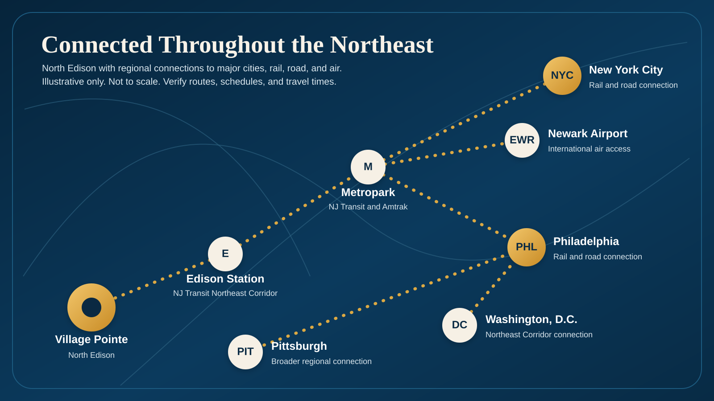

EWR
Official Airport
Newark Liberty International Airport
Major international airport serving the New Jersey and New York region.
Open official EWR siteVillage Pointe in North Edison sits within reach of major international gateways, regional airports, and business aviation options across New Jersey, New York, and Philadelphia.
No single airport is best for every trip. Flight schedules, fares, traffic, parking, ground transportation, and airline service can make different airports useful at different times.
This guide links directly to official airport or government sources. Always verify current flights, terminal information, road conditions, parking, and travel time before departure.

Use the official airport sites for live flight, terminal, parking, accessibility, and transportation information.
Major international airport serving the New Jersey and New York region.
Open official EWR siteMajor international gateway in New York City with extensive domestic and international service.
Open official JFK siteMajor New York City commercial airport and an additional option for regional travel planning.
Open official LGA siteMajor airport serving Philadelphia and the surrounding region, with domestic and international service.
Open official PHL siteThese airports may be useful depending on airline service, destination, aircraft type, and trip requirements.
Mercer County airport serving the central New Jersey region.
Open Mercer County airport pagePort Authority airport in the Hudson Valley and another regional commercial aviation option.
Open official SWF siteGeneral aviation reliever airport in Bergen County, New Jersey, primarily serving business and private aircraft operations.
Open Port Authority airports pageCheck live airline schedules, terminal details, traffic, tolls, parking, public transportation, security requirements, and weather with the appropriate official source before travel.